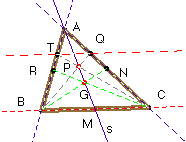
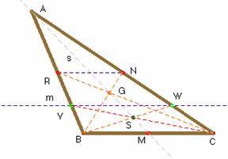

Problema 68.
Dado un triángulo ABC,
a) Tracemos la recta s que contiene a la mediana AM. Tomemos P, un punto cualquiera de s. Tracemos las rectas BP, y CP, que cortarán a AC y a AB, o sus prolongaciones, en Q y T. Demostrar que TQ es paralela a BC.
b) Sea la recta m paralela a BC cortando a AB o su prolongación en V, y a AC o su prolongación en W. Construyamos las rectas BW y CV, que se cortarán en S. Demostrar que la recta AS contiene a la mediana al triángulo por el vértice A.

Solución.-a) En la figura observamos que la proyección desde B de la cuaterna alineada A,G,P,M nos da la cuaterna alineada A,N,Q,C. Proyectando desde C la misma cuaterna se obtiene sobre el lado AB la cuaterna A,R,T,B, donde G es el baricentro, CR y BN las medianas que salen de C y B respectivamente. La razón doble de 4 puntos alineados es un invariante proyectivo, de ahí se sigue que las razones dobles de los puntos A,N,Q,C y de los puntos A,R,T,B son iguales entre sí; (ambas son iguales a la razón doble de A,G,P,M).
Aplicando esto resulta: Razón doble de los puntos A,N,Q,C = (ANQC) = = (ARTB) = .Como la razón entre AC y NC es 2, e igual a la razón entre AB y RB, simplificando se tiene · Deducimos que los triángulos ATQ y ABC son semejantes, pues tiene un ángulo común (el BAC) y los lados que lo forman son proporcionales; por consiguiente el lado restante TQ ha de ser paralelo a BC.

b) Para probar el recíproco, veremos que la razón doble (ANWC) es igual a la razón doble (ARVB).(ANWC) = == == (ARVB).
La cuaterna (ANWC) se obtiene proyectando desde B la cuaterna AGSM; los puntos A, G y M yacen sobre la mediana de BC. Queremos concluir que S también yace en esa mediana. Si no fuera así, la recta BW determinaría sobre esa mediana otro punto S’. La proyección desde C de este punto nos daría un punto V’, diferente de V. Según la parte a) la recta WV’ ha de ser paralela a BC. Esto solamente es posible si V’= V, o lo que es igual, si S’=S. Y con esto concluimos.